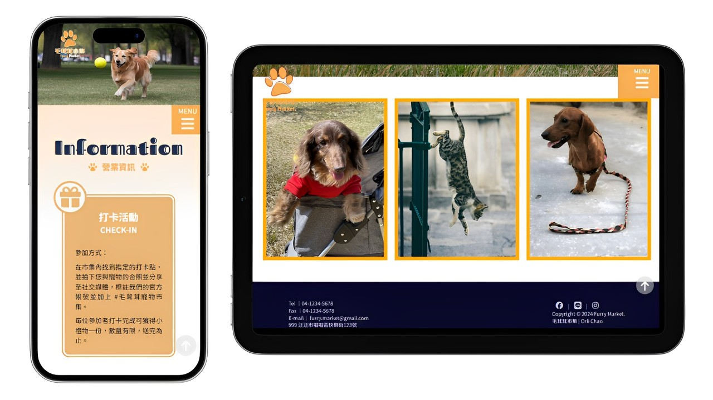
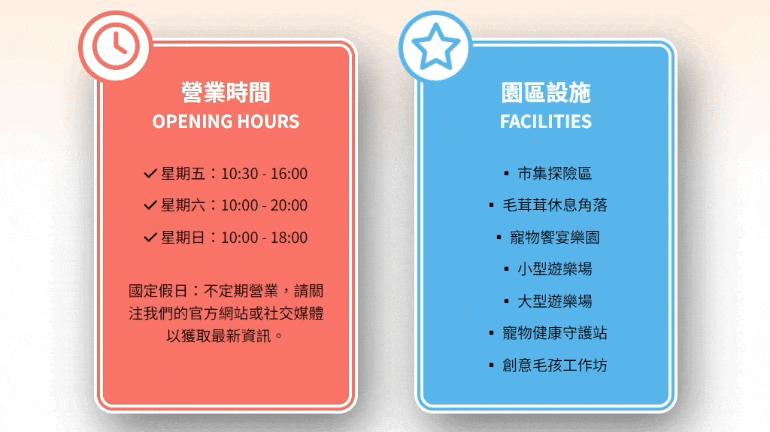
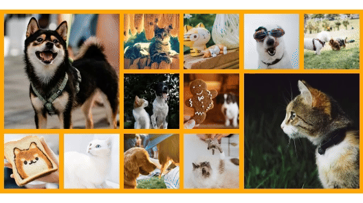
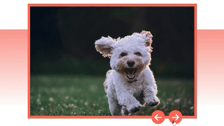
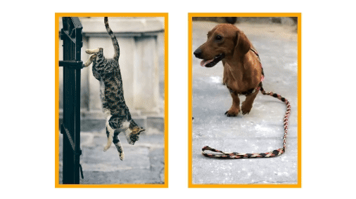

本網站的網頁橫幅（Banner）中設置了一個持續上下移動的指示球，旨在引導訪客探索更多網頁內容。當設備螢幕縮小到一定程度後，指示球會自動隱藏，以確保不影響整體排版。此設計運用了 CSS 動畫技術，提升了用戶體驗的互動性與趣味性，讓訪客自然而然地瀏覽網站的其他部分。
設計理念
本專案的主要目的是練習使用 HTML 和 CSS
進行網頁切版，並以 JavaScript
添加動畫效果。為此，我選擇參考
Cona's 妮娜巧克力夢想城堡 |
南投埔里巧克力中部 DIY 觀光工廠
的官方網站，作為本專案的設計靈感。
在設計過程中，我專注於以下幾個方面：
1. 首頁切版練習：
此次專案主要著重於官網首頁的切版，因此目前僅完成首頁部分。透過這樣的練習，我希望能增強自己在網頁切版方面的技能。
2. 提升技術能力：
透過模仿和實現類似於其他官方網站的畫面和動畫，我希望能提高自己在前端基礎技術的應用能力。
3. 設計風格探索：
我希望在這個專案中探索不同的設計風格，找出最適合寵物市集的元素，創造出活潑且吸引人的網站風格，讓訪客能感受到市集的溫馨與樂趣。
透過以上的設計理念，我期待能創造出一個既美觀又功能完善的網站，並在過程中不斷挑戰和提升自己。

特色介紹
向下滑動指示球
動態資訊區
為了提升互動性，資訊區設計了懸停動畫。當訪客的游標懸停在某個資訊區塊上，該區塊的標誌會左右搖晃，以吸引目光並增添動態視覺效果。此外，透過 JavaScript 設計的輪播功能，在較小螢幕設備上會自動切換顯示內容，並以預設的時間間隔循環呈現，確保介面整潔，避免資訊擁擠，進一步提升訪客的瀏覽體驗。

互動式圖片展示區
當游標懸停於圖片上時，相關文字和不同方向的邊框線會隨之顯現，營造出動態效果。此設計不僅提供了圖片的詳細資訊，還通過視覺變化增強互動性與趣味性。

圖片切換功能
透過點擊左右切換按鈕，訪客能輕鬆瀏覽圖片庫中的每張圖片，自由切換至上一張或下一張。這樣的設計讓圖片瀏覽變得更方便，訪客也能更專注於每張圖片的細節，提升整體的互動體驗。

圖片懸停顯示與滑動輪播
該區塊的圖片設計了懸停效果，當訪客將游標懸停在圖片上時，相關資訊會立即顯示，從而提升了互動性。此外，輪播功能使訪客能夠透過滑動手勢輕鬆切換不同的資訊內容，增強了使用的靈活性與便利性，並確保在各種設備上均能提供良好的瀏覽體驗。

相關技術
Swiper 輪播套件
在本專案中，我選擇使用 Swiper
來實現輪播功能，主要因為它是一個功能齊全且可客製化的輪播套件。除了基本的輪播功能，Swiper
還提供導航按鈕和頁碼等細項的自定義設置。相比於從零開始用原始
JavaScript 實現輪播效果，Swiper
不僅節省了開發時間，還能確保更高的穩定性。
若想了解更多，請訪問
Swiper
問題與挑戰
輪播功能的挑戰與選擇
在開發輪播功能的過程中，我最初嘗試使用原生
JavaScript
來編寫滑動效果，但發現這樣的方式過於複雜且耗時。為了提升開發效率，我開始尋找更合適的套件，最終選擇了
Swiper 來達成目標。
然而，在最一開始的資訊區塊中，我並沒有使用
Swiper，而是透過 JavaScript
實現了類似輪播的輪流顯示效果。雖然缺少滑動切換的靈活性，但仍然有效地呈現了所需的內容。